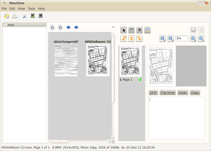

Maxview
Dieser Artikel wurde für die folgenden Ubuntu-Versionen getestet:
Dieser Artikel ist mit keiner aktuell unterstützten Ubuntu-Version getestet! Bitte diesen Artikel testen und das getestet-Tag entsprechend anpassen.
Zum Verständnis dieses Artikels sind folgende Seiten hilfreich:
Der Umstieg von Windows auf Linux ist geschafft. Um vorhandene Office-Dokumente kümmert sich LibreOffice, Bilder und PDF-Dateien sind unproblematisch, das E-Mail-Archiv ist dank Thunderbird auch unter Ubuntu verfügbar. Für manche Musiktitel muss man sich zwar evtl. noch einen passenden Codec installieren, aber auch das ist meist schnell erledigt.
Doch wer tiefer gräbt, fördert unter Umständen ganze Ordner voller .max-Dateien zu Tage. Irgendwann scheint da jemand PaperPort  verwendet zu haben. Zu seiner Zeit war dieses Windows-Programm vergleichbaren Programmen weit voraus. Das Einscannen und Archivieren von Papierdokumenten ließ sich damit elegant erledigen.
verwendet zu haben. Zu seiner Zeit war dieses Windows-Programm vergleichbaren Programmen weit voraus. Das Einscannen und Archivieren von Papierdokumenten ließ sich damit elegant erledigen.
Maxview zeigt nicht nur die von PaperPort erzeugten Archivdateien an, sondern kann diese auch in PDF umwandeln. Darüber hinaus könnte man theoretisch das fortsetzen, was PaperPort einst so interessant gemacht hat. Leider scheint die Weiterentwicklung von Maxview eingeschlafen zu sein. Schwerpunkt dieses Artikels ist daher nicht eine komplette Programmbeschreibung, sondern die Umwandlung bereits vorhandener PaperPort-Dateien. Die Benutzeroberfläche ist auf Englisch, was für den geplanten Einsatzzweck nicht weiter relevant ist.
Hinweis:
PaperPort ist nicht die einzige Anwendung, die Dateien mit der Endung .max verwendet. Aktuelle PaperPort-Versionen (ab 9.0) verwenden dieses proprietäre Format nicht mehr.
Installation¶
 Das Programm ist nicht in den offiziellen Paketquellen enthalten. Zur Installation muss man daher auf ein Fremdpaket des Entwicklers ausweichen.
Das Programm ist nicht in den offiziellen Paketquellen enthalten. Zur Installation muss man daher auf ein Fremdpaket des Entwicklers ausweichen.
Fremdpaket¶
Bis einschließlich Ubuntu 12.04 kann ein Fremdpaket (für Ubuntu 10.04) passend zur eigenen Systemarchitektur heruntergeladen und manuell installiert werden [1]:
32-Bit: maxview_0.7-2_i386_lucid.deb

64-Bit: maxview_0.7-2_amd64_lucid.deb
Hinweis!
Fremdpakete können das System gefährden.
Anmerkung: Für neuere Ubuntu-Versionen muss Maxview aus dem Quellcode kompiliert werden.
Bedienung¶
Maxview besitzt keinen Menü-Eintrag. Der Programmstart [2] erfolgt daher über ein Terminalfenster [3], wobei man den Ordner mit den vorhandenen Dateien angibt:
maxview ~
oder
maxview /PFAD/ZUM/ORDNER
Wählt man den ersten der obigen Befehle, kann man auf der linken Seite des Programmfensters zum gewünschten Ordner im Homeverzeichnis navigieren. Der zweite Befehl öffnet direkt das angegebene Verzeichnis.
|  |
| Hauptfenster mit Navigationsspalte links |
| Detailansicht |
Für den vorgesehenen Einsatzzweck sind nur zwei Schaltflächen relevant:
| Schaltflächen | |
| Symbol | Zweck |
| zwischen Hauptfenster und Detailansicht wechseln | |
| Konvertierung starten | |
Konvertierung¶
Die Konvertierung vorhandener .max-Dateien erfolgt über den "Ausdruck" dieser Dateien. Dazu stehen alle dem System bekannten Drucker zur Verfügung, von denen zwei für den Export besonders interessant sind:
"in PDF-Datei drucken"
"in PostScript-Datei drucken"
Zusätzlich lassen sich über die Schaltfläche "Options >>" weitere Optionen für Maxview aktivieren (siehe Abbildung). Falls man diese nutzen möchte, sollte man darauf achten, dass Text- und Hintergrundfarbe korrekt gesetzt sind. Die Einstellungen kann man mit der Schaltfläche "Save" speichern.
Stapelverarbeitung¶
Zwar suggeriert der Start mit dem Befehl maxview, man könne mehrere Dateien in einem Rutsch konvertieren, aber unglücklicherweise funktionieren die dort genannten Optionen nicht. Damit bleibt nichts anderes übrig, als den oben beschriebenen Weg über die grafische Oberfläche zu gehen.
Deinstallation¶
Nach der Konvertierung kann Maxview über die Paketverwaltung wieder deinstalliert werden. Im Homeverzeichnis bleiben dabei folgende versteckte Ordner und Dateien übrig, die man manuell löschen muss:
der Ordner ~/.maxview/ (Einstellungen)
Ordner mit dem Namen .maxview-trash/ (jeweils in dem Ordner, der beim Programmaufruf angegeben wurde)
Dateien mit dem Namen .paperdesk (in mit Maxview geöffneten Ordnern)
Links¶
PaperPort Viewer
- zur Nutzung unter Linux ist Wine erforderlichWas ist PaperPort
 - deutsche Anleitung zur Version 12
- deutsche Anleitung zur Version 12
- Erstellt mit Inyoka
-
 2004 – 2017 ubuntuusers.de • Einige Rechte vorbehalten
2004 – 2017 ubuntuusers.de • Einige Rechte vorbehalten
Lizenz • Kontakt • Datenschutz • Impressum • Serverstatus -
Serverhousing gespendet von